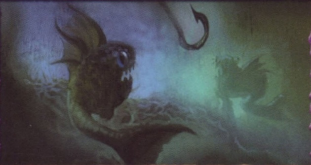
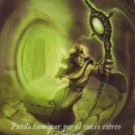
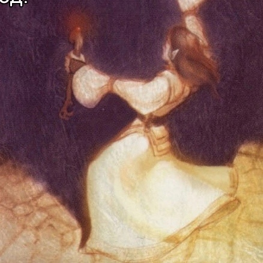
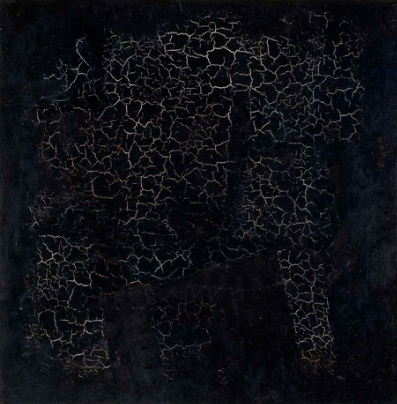
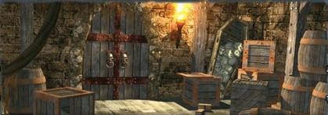

Передвигаясь по подземелью и сражаясь с врагами, герой должен выполнить три задания и не погибнуть. Также игрок может победить, если, играя за повелителя подземелья, он уничтожит всех прочих героев.
«Подземелье» (ориг. «Dungeoneer»)— это серия карточных игр о исследовании подземелий, разработанная Томасом Денмарком и изданная компанией «Atlas Games».
Каждый набор представляет собой отдельную игру, но наборы можно объединять вместе для создания новых, более масштабных приключений. Большинство наборов рассчитаны на двух-четырех игроков, но возможна и одиночная игра с использованием дополнительных правил.
Игрокам предстоит спуститься в подземелье, которое будет постепенно выстраиваться во время партии, и в роли отважных героев попытаться выполнить три задания.
Каждый набор представляет собой отдельную игру, но наборы можно объединять вместе для создания новых, более масштабных приключений. Большинство наборов рассчитаны на двух-четырех игроков, но возможна и одиночная игра с использованием дополнительных правил.
Игрокам предстоит спуститься в подземелье, которое будет постепенно выстраиваться во время партии, и в роли отважных героев попытаться выполнить три задания.
-
В свой ход
- Фаза восстановления
- Фаза злодеяний
- Фаза локаций
- Фаза подвигов
- Фаза сброса/добора карт
-
Этапы битвы
- I. Атака
- II. Ответ
- III-V. Проверки атаки, проверки контратаки и сравнение результатов
- VI. Вызов (только в первый раз)
- VII. Логово
- VIII. Награда
-
В свой или чужой ход
- Применение карт любого момента.
- Применение карт ответа на этапе ответа.
- Применение свойства подготовленной карты и свойства персонажа (если разрешено).
- Подъем героя.
- Бросание вызова (атака героем).
Цель игры
Состав игры
Обзор компонентов
-
Карты героев
На каждой карте героя изображен его портрет, указаны имя, раса и класс, а также основные характеристики: количество очков здоровья, особое умение и пределы инвентаря, определяющие количество возможных карт преимуществ и сокровищ в инвентаре. Также на карте героя перечислены характеристики ближнего боя, магии и скорости для каждого уровня. Когда герой растет в уровне, отмечайте это с помощью накладки уровня. На совершение действий герой тратит очки действия - по умолчанию их число равно значению скорости. Очки здоровья показывают, сколько ран нужно нанести герою, чтобы он погиб. Отмечайте текущее количество здоровья жетонами здоровья. Карта героя находится у игрока. На поле, состоящем из карт локаций, герой представлен фишкой. -
Карты счетчиков
С помощью карты счетчика игрок ведет учет, сколько у его героя на данный момент очков славы и очков риска. Отмечать очки нужно с помощью двух жетонов славы и двух жетонов риска. Очки славы тратятся игроком на применение карт славы, очки риска тратятся его соперниками на применение карт риска. Пределов очкам нет.
Очки риска тратятся на проклятия и столкновения (карты риска). Очки славы тратятся на сокровища и преимущества (карты славы). -
Карты заданий
Чтобы победить в Подземелье, герой должен выполнить три задания. На каждой карте задания есть иллюстрация, название задания, категория, степень (героическое, эпическое, легендарное), локации, в которых может быть выполнено задание, условия выполнения и награда. За выполнения задания герой получает новый уровень. При получении нового уровня сдвигайте накладку уровня на соответствующее деление на своей карте героя. -
Карты локаций
Из этих карт создается игровая зона, где героев ждут приключения. Карты локаций делятся на тоннели/дороги и помещения. На каждой карте локации есть иллюстрация, название, ее тип, количество очков славы и риска, а также четыре выхода. У некоторых карт локаций есть особые эффекты, влияющие на героя, который входит в эту локацию. -
Карты приключений
Карты приключений - основные карты в игре. Игроки применяют эти карты для усиления своих героев или против героев соперников. Карты приключений делятся на карты славы и карты риска. Карты славы, в свою очередь, делятся на преимущества и сокровища. Игрок тратит свои очки славы, чтобы сыграть карту славы на своего героя. Карты риска же делятся на проклятия и столкновения. Игрок тратит очки риска соперника, чтобы сыграть против него карту риска. Свой риск вы не тратите никогда.
На каждой карте приключения есть иллюстрация, название, стоимость применения (в очках славы или риска), время применения (фаза, в которую можно сыграть карту), длительность (срок действия), ее тип, вид, а также текстовый блок, описывающий способности карты.
Помните, что, пока карта приключения у вас на руке, она никак не влияет на игру: ее надо выложить на стол, потратив требуемое количество очков славы или риска. После этого карта считается подготовленной.
По длительности карты приключений бывают:
Мгновенная: карта сбрасывается сразу же после применения. Ее эффекты действуют только в текущем ходу.
Постоянная: карта остается в игре, пока эффект другой карты не вынудит игрока сбросить ее. Каждый герой может иметь в инвентаре ограниченное количество преимуществ и сокровищ постоянной длительности. Эти пределы указаны на карте героя. Других карт данное ограничение не касается.
Довесок: эта карта прикрепляется к другой карте (положите довесок под нее). Довесок уходит в сброс, если основная карта сбрасывается или возвращается на руку игроку. Кроме того, довесок не учитывается в пределах преимуществ, сокровищ или логова игрока.
Монстр: карта монстра сбрасывается, когда здоровье монстра достигает нуля. Монстр находится в локации только при атаке: в другое время он находится на руке игрока или в логове.
Подготовка к игре
1) Разделите карты на отдельные колоды по рубашкам. Отложите карты локаций в сторону, а остальные колоды по отдельности перетасуйте.
2) Среди карт локаций отыщите карту с символом входа. Это начальная локация - положите ее лицевой стороной вверх в центре игровой зоны. Возьмите четыре случайные карты тоннелей/дорог (включая мрачные) и приставьте по одной с каждой стороны от начальной локации. Остальные карты локаций перетасуйте и положите в пределах досягаемости игроков лицевой стороной вниз. Обратите внимание, что на соединение карт есть несколько ограничений (подробнее в разделе Ход игры - Фаза локаций).
3) Случайным образом сдайте каждому игроку по одной карте героя и накладке уровня. Полученную карту игрок кладет перед собой, а накладку откладывает в сторону - она понадобится при переходе на второй уровень и выше. Возьмите 1 жетон здоровья номиналом «3» и 3 жетона здоровья номиналом «1» и положите рядом с картой героя - они будут обозначать его здоровье. Область вокруг карты героя называется инвентарем. Оставшиеся карты героев уберите в коробку.
4) Каждый игрок берет себе карту счетчика, 2 жетона славы и 2 жетона риска. Карту счетчика располагайте таким образом, чтобы счетчик славы (зеленый) был ближе к вам.
5) Игроки берут фишки своих героев (предварительно установив их на подставки) и ставят их на карту входа, за что тут же получают по 1 очку славы и 1 очку риска каждый. Отметьте полученные очки на карте счетчиков с помощью жетонов славы и риска.
6) Сдайте каждому игроку по две карты заданий лицевой стороной вверх: это личные задания игроков, которые могут выполнить только они. Положите одну карту задания лицевой стороной вверх рядом с колодой заданий в пределах досягаемости всех игроков: это будет общее задание, которое в свой ход может попытаться выполнить любой игрок.
7) Сдайте 5 карт приключений каждому игроку - они образуют руку игрока. Игрок не должен показывать свою руку соперникам. Колоду приключений положите поблизости, чтобы каждый мог до нее дотянуться. Рядом с колодой приключений оставьте место для сброса.
8) Первого игрока определите броском кубика.
2) Среди карт локаций отыщите карту с символом входа. Это начальная локация - положите ее лицевой стороной вверх в центре игровой зоны. Возьмите четыре случайные карты тоннелей/дорог (включая мрачные) и приставьте по одной с каждой стороны от начальной локации. Остальные карты локаций перетасуйте и положите в пределах досягаемости игроков лицевой стороной вниз. Обратите внимание, что на соединение карт есть несколько ограничений (подробнее в разделе Ход игры - Фаза локаций).
3) Случайным образом сдайте каждому игроку по одной карте героя и накладке уровня. Полученную карту игрок кладет перед собой, а накладку откладывает в сторону - она понадобится при переходе на второй уровень и выше. Возьмите 1 жетон здоровья номиналом «3» и 3 жетона здоровья номиналом «1» и положите рядом с картой героя - они будут обозначать его здоровье. Область вокруг карты героя называется инвентарем. Оставшиеся карты героев уберите в коробку.
4) Каждый игрок берет себе карту счетчика, 2 жетона славы и 2 жетона риска. Карту счетчика располагайте таким образом, чтобы счетчик славы (зеленый) был ближе к вам.
5) Игроки берут фишки своих героев (предварительно установив их на подставки) и ставят их на карту входа, за что тут же получают по 1 очку славы и 1 очку риска каждый. Отметьте полученные очки на карте счетчиков с помощью жетонов славы и риска.
6) Сдайте каждому игроку по две карты заданий лицевой стороной вверх: это личные задания игроков, которые могут выполнить только они. Положите одну карту задания лицевой стороной вверх рядом с колодой заданий в пределах досягаемости всех игроков: это будет общее задание, которое в свой ход может попытаться выполнить любой игрок.
7) Сдайте 5 карт приключений каждому игроку - они образуют руку игрока. Игрок не должен показывать свою руку соперникам. Колоду приключений положите поблизости, чтобы каждый мог до нее дотянуться. Рядом с колодой приключений оставьте место для сброса.
8) Первого игрока определите броском кубика.
Ход игры
Игроки ходят по очереди. Ход каждого игрока состоит из 5 фаз:
- фаза восстановления,
- фаза злодеяний,
- фаза локаций,
- фаза подвигов,
- фаза сброса/добора карт.
По окончании этих фаз ход передаётся игроку слева. Когда каждый игрок сделал ход, считается, что завершился игровой раунд.
Проклятия можно играть в любой момент фазы злодеяний, до или после столкновений. Столкновения играются все сразу, чтобы соперники могли подготовить ответ. Если вы играете столкновение, вы атакуете (начинаете битву); следуйте процедуре, описанной в разделе «Битва». Монстр может начать только одну атаку за ход. На атаку монстра тратится только риск атакованного героя, но не очки действия.
Каждая карта локации должна стыковаться с другой картой локации, и ни одна карта не может быть «оторвана» от остальных карт так, чтобы герой не мог перейти с неё в другую часть поверхности.
- движение,
- исследование,
- розыгрыш карты славы,
- попытка выполнить задание.
Также в фазе подвигов можно выполнять некоторые особые действия. Каждое действие можно выполнять сколько угодно раз, пока позволяют ваши очки действия и запас славы.
Движение. Потратьте 1 очко действия, чтобы переместить своего героя в соседнюю локацию через работающий выход. Соседней локацией считается карта локации, соединённая с локацией, где находится герой, любым выходом (даже если это стена). Работающим выходом считается любой выход, кроме стены, соединяющий две соседних локации. На выходе может быть угроза, которую нужно преодолеть, чтобы вывести героя из локации. Игнорируйте условия выходов локации, в которую герой входит.
Исследование. Вы можете брать из колоды и выкладывать дополнительные карты локаций, тратя одно очко действия на каждую.
Розыгрыш карты славы. Этим действием вы можете играть с руки в инвентарь карты славы (преимущества и сокровища). Вы можете играть карты славы, пока хватает очков славы. Очки действия на это не тратятся.
Помните, что у героя может быть ограниченное количество постоянных преимуществ и постоянных сокровищ (пределы указаны на карте героя). Мгновенные карты и довески таким ограничениям не подвержены. Также у вас в игре может быть только одно сокровище одного типа (так, двух шлемов у вас быть не может). На преимущества это ограничение не распространяется. Карта, сыгранная с руки в инвентарь, после оплаты её стоимости в очках славы считается подготовленной; карта у вас на руке не оказывает влияния на игру, пока не будет подготовлена.
Попытка выполнить задание. На карте задания указано, в какой локации и каким образом герой может выполнить задание. Игрок сам волен решать, когда его герой готов попытаться выполнить задание, попытка не происходит автоматически при входе героя в указанную локацию. Все герои могут попытаться выполнить общее задание, но только первый выполнивший все условия герой получает награду. Ваши личные задания может выполнить только ваш герой.
На первую попытку выполнить задание в каждом ходу не надо тратить очки действия (если на самой карте не сказано иначе); каждая повторная попытка требует одно очко действия. Если вы успешно выполнили задание, получите награду, указанную в правом нижнем углу карты, и переверните её (или разверните на 180°, если это заданиеартефакт). Выполнив 3 задания, вы побеждаете в игре!
Успешное выполнение задания завершает фазу подвигов, и вы немедленно переходите к следующей фазе. Любое выполненное задание удаляется из игры. Вместо выполненного общего задания (кроме заданий-артефактов) немедленно вытяните новое. Вместо выполненного личного задания новое тянуть не нужно.
Если в свой ход вы не двигались, получите очки риска и славы с локации, в которой остались. Особые эффекты и преграды локации при этом применять не нужно. Если вы не потратили все очки действия, можете сохранить одно очко на действия вне хода. Отметьте это, положив жетон здоровья из резерва рядом с фишкой вашего героя, и уберите жетон в резерв, когда потратите очко. Если вам не удастся потратить очко до своего следующего хода, уберите жетон в фазе восстановления этого хода. Теперь доберите на руку карты из колоды приключений до пяти. Если карты в колоде закончились, перетасуйте сброс. На этом ваш ход закончится.
- Применение карты любого момента -
Вы можете сыграть карту с временем применения «любой момент», если достаточно очков риска или славы.
- Применение карты ответа -
В битве на этапе ответа вы можете применить карту или эффект с временем применения «ответ».
- Применение подготовленной карты -
Вы можете применить эффекты карт в вашем инвентаре, а также особое умение героя, если достаточно очков риска или славы.
- Подъём героя -
За 1 очко действия вы можете поднять упавшего героя (вернуть в исходное положение лежащую на боку фишку). Герой, фишка которого лежит, не может двигаться.
- Битва -
Подробности описаны дальше.
- фаза восстановления,
- фаза злодеяний,
- фаза локаций,
- фаза подвигов,
- фаза сброса/добора карт.
По окончании этих фаз ход передаётся игроку слева. Когда каждый игрок сделал ход, считается, что завершился игровой раунд.
I. Фаза восстановления
Всё, что действует в течение хода, возвращается в исходное состояние. Восстанавливаются ловушки, заново блокируются выходы, временные эффекты перестают действовать, а эффекты карт, которые можно применять раз в ход, снова можно применить. Очки действия, оставшиеся от предыдущего вашего хода, сгорают, и ваш герой получает новые очки действия, соответствующие значению его скорости. Все локации, кроме той, на которой находится ваш герой, снова становятся для него «новыми».II. Фаза злодеяний
В этой фазе игрок действует в роли властелина драконов/ледяной ведьмы (и т.п., в зависимости от набора). Самое время сыграть карты риска, то есть те, на которых в качестве времени применения указана фаза злодеяний, такие как проклятия и столкновения. Выберите соперника, у которого достаточно очков риска, и потратьте нужное количество его очков, чтобы сыграть карту против его героя. Карты риска, которые не нацелены на одного конкретного героя, можно оплатить риском любого игрока, за исключением себя, но нельзя использовать очки риска разных соперников для оплаты одной карты. Помните, вы никогда не можете тратить собственный риск.Проклятия можно играть в любой момент фазы злодеяний, до или после столкновений. Столкновения играются все сразу, чтобы соперники могли подготовить ответ. Если вы играете столкновение, вы атакуете (начинаете битву); следуйте процедуре, описанной в разделе «Битва». Монстр может начать только одну атаку за ход. На атаку монстра тратится только риск атакованного героя, но не очки действия.
III. Фаза локаций
Вытяните одну карту локации и положите на любое место, допустимое правилами. Если все карты локаций уже выложены на стол, пропустите фазу локаций.Каждая карта локации должна стыковаться с другой картой локации, и ни одна карта не может быть «оторвана» от остальных карт так, чтобы герой не мог перейти с неё в другую часть поверхности.
IV. Фаза подвигов
В этой фазе вы можете в любом порядке выполнять любые из перечисленных ниже действий:- движение,
- исследование,
- розыгрыш карты славы,
- попытка выполнить задание.
Также в фазе подвигов можно выполнять некоторые особые действия. Каждое действие можно выполнять сколько угодно раз, пока позволяют ваши очки действия и запас славы.
Движение. Потратьте 1 очко действия, чтобы переместить своего героя в соседнюю локацию через работающий выход. Соседней локацией считается карта локации, соединённая с локацией, где находится герой, любым выходом (даже если это стена). Работающим выходом считается любой выход, кроме стены, соединяющий две соседних локации. На выходе может быть угроза, которую нужно преодолеть, чтобы вывести героя из локации. Игнорируйте условия выходов локации, в которую герой входит.
Исследование. Вы можете брать из колоды и выкладывать дополнительные карты локаций, тратя одно очко действия на каждую.
Розыгрыш карты славы. Этим действием вы можете играть с руки в инвентарь карты славы (преимущества и сокровища). Вы можете играть карты славы, пока хватает очков славы. Очки действия на это не тратятся.
Помните, что у героя может быть ограниченное количество постоянных преимуществ и постоянных сокровищ (пределы указаны на карте героя). Мгновенные карты и довески таким ограничениям не подвержены. Также у вас в игре может быть только одно сокровище одного типа (так, двух шлемов у вас быть не может). На преимущества это ограничение не распространяется. Карта, сыгранная с руки в инвентарь, после оплаты её стоимости в очках славы считается подготовленной; карта у вас на руке не оказывает влияния на игру, пока не будет подготовлена.
Попытка выполнить задание. На карте задания указано, в какой локации и каким образом герой может выполнить задание. Игрок сам волен решать, когда его герой готов попытаться выполнить задание, попытка не происходит автоматически при входе героя в указанную локацию. Все герои могут попытаться выполнить общее задание, но только первый выполнивший все условия герой получает награду. Ваши личные задания может выполнить только ваш герой.
На первую попытку выполнить задание в каждом ходу не надо тратить очки действия (если на самой карте не сказано иначе); каждая повторная попытка требует одно очко действия. Если вы успешно выполнили задание, получите награду, указанную в правом нижнем углу карты, и переверните её (или разверните на 180°, если это заданиеартефакт). Выполнив 3 задания, вы побеждаете в игре!
Успешное выполнение задания завершает фазу подвигов, и вы немедленно переходите к следующей фазе. Любое выполненное задание удаляется из игры. Вместо выполненного общего задания (кроме заданий-артефактов) немедленно вытяните новое. Вместо выполненного личного задания новое тянуть не нужно.
V. Фаза сброса/добора карт
Если у вас есть карты на руке, вы должны сбросить либо одну карту с руки, либо одну карту сокровища из инвентаря, либо одну карту столкновения из логова. Карты преимуществ сбросить таким образом нельзя. Если у вас нет карт на руке, вы не обязаны сбрасывать карты вовсе.Если в свой ход вы не двигались, получите очки риска и славы с локации, в которой остались. Особые эффекты и преграды локации при этом применять не нужно. Если вы не потратили все очки действия, можете сохранить одно очко на действия вне хода. Отметьте это, положив жетон здоровья из резерва рядом с фишкой вашего героя, и уберите жетон в резерв, когда потратите очко. Если вам не удастся потратить очко до своего следующего хода, уберите жетон в фазе восстановления этого хода. Теперь доберите на руку карты из колоды приключений до пяти. Если карты в колоде закончились, перетасуйте сброс. На этом ваш ход закончится.
Особые действия
Перечисленные ниже действия вы можете выполнить как в свой, так и в чужой ход.- Применение карты любого момента -
Вы можете сыграть карту с временем применения «любой момент», если достаточно очков риска или славы.
- Применение карты ответа -
В битве на этапе ответа вы можете применить карту или эффект с временем применения «ответ».
- Применение подготовленной карты -
Вы можете применить эффекты карт в вашем инвентаре, а также особое умение героя, если достаточно очков риска или славы.
- Подъём героя -
За 1 очко действия вы можете поднять упавшего героя (вернуть в исходное положение лежащую на боку фишку). Герой, фишка которого лежит, не может двигаться.
- Битва -
Подробности описаны дальше.
Битва
Начало битвы
Раз в ход за одно очко действия герой может начать битву. Он может атаковать либо одного из монстров сразу же после их атаки на этапе вызова (включая монстров, которых необходимо уничтожить по заданию), либо другого героя, который находится в той же локации. Если вы провели успешный удар, можете либо нанести герою соперника рану, либо отобрать у него жетон задания сопровождения (см. «Категории заданий»). В фазе злодеяний можно начать битву, сыграв против героя соперника карты монстров. Играя карту монстра, положите на него столько жетонов здоровья из резерва, сколько указано на карте монстра. Если у монстра только одно очко здоровья, жетон класть не нужно. Каждый монстр атакует только один раз за ход. В качестве оплаты используется риск героя, которого атакуют.Форма битвы
Атакуя, монстр или герой выбирает форму, в которой пройдёт битва (ближний бой, магия или скорость). Но он может выбирать только из тех форм, символы которых на его карте имеют круглую форму.Этапы битвы Битва состоит из следующих этапов: - атака,
- ответ,
- проверка атаки,
- проверка контратаки,
- сравнение,
- вызов,
- логово,
- награда.
I. Атака.
Атакующий выбирает цель и форму битвы (ближний бой, магия или скорость) для каждой атакующей карты. Нельзя назначить форму битвы, для которой на карте нет символа обычной атаки (круглого символа). На этом же этапе применяются особые эффекты атакующей карты (кроме эффектов удара) и особые умения героя. II. Ответ.
Защищающийся может сыграть карты и применить эффекты с временем применения «Ответ».
III. Проверка атаки.
Атакующий бросает один кубик и добавляет к результату броска значение выбранной формы битвы (ближний бой, магия, скорость), указанное на его карте. Если атакующих монстров несколько, нужно повторить процедуру для каждой карты.
IV. Проверка контратаки.
Защищающийся бросает один кубик против каждой атаки и добавляет к результату броска соответствующую характеристику (ближний бой, магия, скорость) своей карты. Выбирайте значение, соответствующее уровню вашего героя. Защищающийся не может выбирать, какую именно характеристику применять, так как атакующий уже выбрал форму битвы.
V. Сравнение результатов.
Результаты предыдущих двух этапов сравниваются для каждой атаки. При равенстве результатов ничего не происходит.
Игрок с наибольшим результатом проводит успешный удар и наносит монстру или герою соперника одну рану. Помимо нанесения раны, успешная атака может иметь другие последствия — они указаны на карте столкновения после текста «наносит одну рану».
Раны уменьшают количество очков здоровья; отметьте это, сняв жетон здоровья с карты монстра или карты героя. Если количество очков здоровья падает до нуля, монстр или герой повержен. Игрок, чей герой повержен, выбывает из игры.
VI. Вызов.
Герой, который подвергся атаке, теперь может провести одну атаку по одной из атаковавших его карт или по герою, находящемуся в той же локации. На это ему нужно потратить одно очко действия (если он, конечно, сохранил его с прошедшего хода). Повторите предыдущие этапы битвы за исключением этапа вызова — пропустите его.
VII. Логово.
Каждый монстр, который не был ранен, на выбор владельца может вернуться на его руку или в его логово. Раненых монстров можно отправить в логово или в сброс, но не на руку. Поверженный монстр уходит в сброс. В логове каждого игрока одновременно может находиться не более трёх монстров. Монстров в логове можно играть так же, как и монстров с руки. Вы должны отправить в сброс лишние карты из логова (на свой выбор), если в нём становится больше трёх монстров.
VIII. Награда.
За каждую рану, нанесённую герою монстром, игрок, которому принадлежит монстр, может добавить одно очко риска любому игроку по своему выбору. Каждая рана, которую наносит монстру герой, приносит игроку, которому принадлежит герой, одно очко славы. Награда выдаётся за всех монстров, кроме монстров, связанных с заданиями: для них предусмотрена особая награда, указанная на карте задания.
Угрозы
Угроза — некое испытание, которое герой должен преодолеть. Угрозы не то же самое, что битва, хотя часто угрозы встречаются в процессе битвы. Чтобы преодолеть угрозу, герой должен пройти проверку какой-либо характеристики. Чаще всего это значения ближнего боя, магии или скорости, но некоторые угрозы могут подвергнуть проверке другие характеристики, например уровень или текущее количество очков здоровья. Для проверки игрок должен бросить кубик и прибавить выпавший результат к значению характеристики, проходящей проверку. Если игрок получает сумму, не уступающую значению угрозы, угроза успешно преодолена; если меньше — проверка провалена. Если не оговорено иного, угрозы-ловушки воздействуют на всех героев в одной локации, но каждый из них бросает кубик и проходит проверку отдельно.
Категории заданий
Задания делятся на несколько категорий, каждая из которых имеет свои особенности выполнения. Категория задания указана в верхней части карты под её названием.
- Артефакт -
Выполнив задание-артефакт, не переворачивайте его лицевой стороной вниз, а поверните на 180°. Теперь вам доступна награда за это задание, которая действует на постоянной основе до конца партии. Артефакты не являются сокровищами, не учитываются в пределах сокровищ и не конфликтуют с сокровищами: у героя могут быть, например, шлем-артефакт и обычный шлем-сокровище одновременно.
- Влияние - Пока задание не выполнено, оно оказывает влияние на игрока. Общее задание-влияние действует сразу на всех игроков, но награду за него получит только тот игрок, который его выполнит.
- Жертва - Для выполнения этого задания нужно пожертвовать чем-либо (очками здоровья или картами преимуществ, например).
- Охота - Победите монстра, указанного в карте задания. Монстр атакует первым по обычным правилам битвы. Очки действия при этом не тратятся. Форму атаки выбирает игрок слева от вас, он же бросает кубик за монстра. После атаки монстра и вашей контратаки вы можете атаковать его ещё раз на этапе вызова, если у вас ещё осталось 1 очко действия. Монстры, порождённые картами заданий, не возвращаются в логово или на руки игроков и не приносят ни славы, ни риска.
- Сопровождение - Герой должен сначала дойти до первой указанной в задании локации и положить на карту задания жетон слежения (второй жетон слежения с той же буквой игрок кладёт на карту своего героя). Затем он доходит до второй указанной в задании локации и снимает жетоны с карт. Общее заданиесопровождение становится личным заданием для первого игрока, который попытается его выполнить, положив жетоны слежения на карты. В этом случае немедленно вытяните новую карту задания, которое станет новым общим заданием.
Размещение жетона на карте и его снятие — добровольные действия, которые игрок совершает в фазе подвигов, не тратя очков действия. Кроме того, от задания сопровождения можно отказаться в любой момент, просто сняв жетон с карты героя и положив его в локации, где находится в данный момент герой. Позже жетон сможет подобрать любой другой или тот же герой и продолжить выполнение задания. Жетон снова помещается на карту взявшего задание героя, и оно становится личным для него, даже если у него уже есть 2 личных задания.
Задание сопровождения можно отнять, если герой успешно атакует героя с этим заданием (см. «Начало битвы»).
- Угроза - Преодолейте угрозу, указанную на карте задания. По общим правилам первая попытка не тратит очков действия, каждая повторная требует одно очко действия. Вы можете предпринять любое количество попыток, пока хватает очков действия. Проваленные попытки оказывают влияние на всех героев в локации.
- Шанс - Чтобы выполнить задание, надо получить определённые результаты при броске кубиков.
- Артефакт -
Выполнив задание-артефакт, не переворачивайте его лицевой стороной вниз, а поверните на 180°. Теперь вам доступна награда за это задание, которая действует на постоянной основе до конца партии. Артефакты не являются сокровищами, не учитываются в пределах сокровищ и не конфликтуют с сокровищами: у героя могут быть, например, шлем-артефакт и обычный шлем-сокровище одновременно.
- Влияние - Пока задание не выполнено, оно оказывает влияние на игрока. Общее задание-влияние действует сразу на всех игроков, но награду за него получит только тот игрок, который его выполнит.
- Жертва - Для выполнения этого задания нужно пожертвовать чем-либо (очками здоровья или картами преимуществ, например).
- Охота - Победите монстра, указанного в карте задания. Монстр атакует первым по обычным правилам битвы. Очки действия при этом не тратятся. Форму атаки выбирает игрок слева от вас, он же бросает кубик за монстра. После атаки монстра и вашей контратаки вы можете атаковать его ещё раз на этапе вызова, если у вас ещё осталось 1 очко действия. Монстры, порождённые картами заданий, не возвращаются в логово или на руки игроков и не приносят ни славы, ни риска.
- Сопровождение - Герой должен сначала дойти до первой указанной в задании локации и положить на карту задания жетон слежения (второй жетон слежения с той же буквой игрок кладёт на карту своего героя). Затем он доходит до второй указанной в задании локации и снимает жетоны с карт. Общее заданиесопровождение становится личным заданием для первого игрока, который попытается его выполнить, положив жетоны слежения на карты. В этом случае немедленно вытяните новую карту задания, которое станет новым общим заданием.
Размещение жетона на карте и его снятие — добровольные действия, которые игрок совершает в фазе подвигов, не тратя очков действия. Кроме того, от задания сопровождения можно отказаться в любой момент, просто сняв жетон с карты героя и положив его в локации, где находится в данный момент герой. Позже жетон сможет подобрать любой другой или тот же герой и продолжить выполнение задания. Жетон снова помещается на карту взявшего задание героя, и оно становится личным для него, даже если у него уже есть 2 личных задания.
Задание сопровождения можно отнять, если герой успешно атакует героя с этим заданием (см. «Начало битвы»).
- Угроза - Преодолейте угрозу, указанную на карте задания. По общим правилам первая попытка не тратит очков действия, каждая повторная требует одно очко действия. Вы можете предпринять любое количество попыток, пока хватает очков действия. Проваленные попытки оказывают влияние на всех героев в локации.
- Шанс - Чтобы выполнить задание, надо получить определённые результаты при броске кубиков.
Правила движения
В фазе подвигов герой может двигаться между локациями. На переход на соседнюю локацию тратится одно очко действия. Но часто для перехода на другую локацию требуется выполнить дополнительные условия. Нужно следовать условиям выхода той карты локации, на которой герой находится в начале хода, то есть той, с которой он уходит (начинает движение). Игнорируйте условия выходов локации, в которую герой входит (заканчивает движение).
- стена,
- блокирован,
- ловушка.
Открытый выход: через открытый выход можно двигаться без каких-либо дополнительных условий.
Б (блокированный выход): преодолейте угрозу, указанную на пиктограмме выхода, или потеряете одно очко действия. Если вы провалили проверку и очков действия у вас больше не осталось, считается, что выход открыт, но ваш герой остался в прежней локации. Поставьте фишку героя на выход, чтобы не забыть, что он открыт. Чтобы перейти в другую локацию, герою придётся потратить одно очко действия в следующем ходу. Пока выход открыт, им могут пользоваться другие герои. Выход будет считаться открытым, пока открывший его герой не покинул локацию.
Л (ловушка): чтобы выйти из локации, вам нужно обезвредить ловушку или избежать её. Преодолейте угрозу, указанную на пиктограмме выхода, или получите 1 рану. При этом герой в любом случае выходит из локации, независимо от успеха в преодолении угрозы. Обратите внимание, что выходы-ловушки не имеют никакого отношения к картам ловушек из колоды приключений, поэтому на них не распространяются различные эффекты карт.
Стена: таким выходом нельзя воспользоваться ни с одной, ни с другой стороны.
Портал: можете потратить 1 очко действия, чтобы переместить вашего героя из локации с символом портала в локацию с символом входа (или наоборот), как если бы эти две локации были соседними и между ними находился открытый выход. Буквы на двух локациях должны совпадать. Соответствие между порталом и входом определяет игрок, который первым открыл карту локации с порталом: он кладёт на две карты «сообщающихся» локаций соответствующие жетоны слежения (подробнее — в «Подземелье и поверхность»).
Опасность увеличивает сложность преодоления ловушек-столкновений, сыгранных в эту локацию.
Шипы
Герой должен преодолеть угрозу, иначе получит одну рану.
Яма
Герой должен преодолеть угрозу, чтобы не свалиться в яму. В случае провала проверки положите фишку героя набок. Пока фишка лежит, герой не может двигаться — это единственный штраф данного состояния. Чтобы выбраться из ямы и вернуть фишку героя в исходное состояние, вам придётся потратить одно очко действия.
Обычные выходы
Переходы между локациями обозначены следующими символами: - открыто,- стена,
- блокирован,
- ловушка.
Открытый выход: через открытый выход можно двигаться без каких-либо дополнительных условий.
Б (блокированный выход): преодолейте угрозу, указанную на пиктограмме выхода, или потеряете одно очко действия. Если вы провалили проверку и очков действия у вас больше не осталось, считается, что выход открыт, но ваш герой остался в прежней локации. Поставьте фишку героя на выход, чтобы не забыть, что он открыт. Чтобы перейти в другую локацию, герою придётся потратить одно очко действия в следующем ходу. Пока выход открыт, им могут пользоваться другие герои. Выход будет считаться открытым, пока открывший его герой не покинул локацию.
Л (ловушка): чтобы выйти из локации, вам нужно обезвредить ловушку или избежать её. Преодолейте угрозу, указанную на пиктограмме выхода, или получите 1 рану. При этом герой в любом случае выходит из локации, независимо от успеха в преодолении угрозы. Обратите внимание, что выходы-ловушки не имеют никакого отношения к картам ловушек из колоды приключений, поэтому на них не распространяются различные эффекты карт.
Стена: таким выходом нельзя воспользоваться ни с одной, ни с другой стороны.
Другие выходы
Подземный ход: можете потратить одно очко действия, чтобы переместить вашего героя из одной локации с символом подземного хода в другую с таким же символом, как если бы эти две локации были соседними и между ними находился открытый выход. Буквы на двух локациях должны совпадать.Портал: можете потратить 1 очко действия, чтобы переместить вашего героя из локации с символом портала в локацию с символом входа (или наоборот), как если бы эти две локации были соседними и между ними находился открытый выход. Буквы на двух локациях должны совпадать. Соответствие между порталом и входом определяет игрок, который первым открыл карту локации с порталом: он кладёт на две карты «сообщающихся» локаций соответствующие жетоны слежения (подробнее — в «Подземелье и поверхность»).
Преграды
Преграды действуют на героев, которые вошли в данную локацию, двигаясь в свой ход. Если герой двигался в чужой ход, преграда на него не действует.Опасность увеличивает сложность преодоления ловушек-столкновений, сыгранных в эту локацию.
Шипы
Герой должен преодолеть угрозу, иначе получит одну рану.
Яма
Герой должен преодолеть угрозу, чтобы не свалиться в яму. В случае провала проверки положите фишку героя набок. Пока фишка лежит, герой не может двигаться — это единственный штраф данного состояния. Чтобы выбраться из ямы и вернуть фишку героя в исходное состояние, вам придётся потратить одно очко действия.
Общие правила
Вы
Когда карта говорит «вы» или «ваш», речь идёт об игроке, контролирующем карту.
Модификаторы броска
Любой эффект, влияющий на результаты броска, надо заявлять и применять до броска.
Очки действия и скорость
Число очков действия равно значению скорости героя. При этом скорость героя и очки действия — не одно и то же, изменение скорости не означает мгновенного изменения количества очков действия.
Порядок действий
В случае споров придерживайтесь следующего порядка применения карт и их эффектов: преимущества (в том числе особые умения героев), затем сокровища, проклятия, выход, трата очков действия, вход героя в локацию, получение очков риска и славы, эффект локации, столкновение, бросок атаки, бросок контратаки, задание, передача хода.
Приоритет карты
Если текст на карте противоречит тексту правил, нужно следовать тексту карты.
Трата очков
Игрок тратит свои очки славы для применения карт сокровищ и преимуществ. Игрок тратит чужие очки риска для применения карт проклятий и столкновений. Игрок никогда не может тратить свои очки риска.
Когда карта говорит «вы» или «ваш», речь идёт об игроке, контролирующем карту.
Модификаторы броска
Любой эффект, влияющий на результаты броска, надо заявлять и применять до броска.
Очки действия и скорость
Число очков действия равно значению скорости героя. При этом скорость героя и очки действия — не одно и то же, изменение скорости не означает мгновенного изменения количества очков действия.
Порядок действий
В случае споров придерживайтесь следующего порядка применения карт и их эффектов: преимущества (в том числе особые умения героев), затем сокровища, проклятия, выход, трата очков действия, вход героя в локацию, получение очков риска и славы, эффект локации, столкновение, бросок атаки, бросок контратаки, задание, передача хода.
Приоритет карты
Если текст на карте противоречит тексту правил, нужно следовать тексту карты.
Трата очков
Игрок тратит свои очки славы для применения карт сокровищ и преимуществ. Игрок тратит чужие очки риска для применения карт проклятий и столкновений. Игрок никогда не может тратить свои очки риска.
Общие эффекты карт
Х цена
Если стоимость применения эффекта равна Х очков славы или риска, это значит, что игрок сам выбирает, сколько заплатить.
Падение
Фишка героя кладётся набок — это показывает, что герой не может двигаться. Если ваш герой упал, вы должны потратить одно очко действия, чтобы подняться. Ни на что другое, кроме подъёма, тратить очки действия упавшего героя нельзя. Других штрафов это состояние не накладывает. Иногда, чтобы подняться, помимо одного очка действия, герою может потребоваться преодолеть угрозу — некоторые карты имеют такой эффект.
Перенос
Этот эффект переносит фишки героев. Герой получает очки риска и славы, а также активирует эффекты локации, в которую перенёсся, только если он двигается в свой ход. Герой сохраняет состояние, в котором был до переноса, например, если он был упавшим, он останется упавшим в новой локации. Как правило, с помощью переноса нельзя переместить героя из подземелья на поверхность или наоборот, если описание эффекта не содержит прямого указания на такую возможность.
Понижение уровня
Уровень героя нельзя опустить ниже 1-го.
Предел инвентаря
Эффекты карт начинают действовать с момента применения, так что карта, увеличивающая пределы инвентаря героя (например, «Поясная сумка»), может быть сыграна даже тогда, когда этот предел достигнут.
Преимущество
Преимущества нельзя добровольно сбросить из инвентаря, но если другая карта вынуждает вас сбросить преимущество, оно тут же перестаёт действовать.
Проклятие
Вы можете распространять эффекты сыгранных вами карт проклятий на своего героя, но свои очки риска вы всё равно не можете тратить.
Сдвиг
Этот эффект перемещает карты локаций. Правила размещения локаций при этом продолжают действовать. Когда вы сдвигаете карту локации, вы никогда не можете разместить локацию или несколько локаций так, чтобы из этих локаций не было пути ко входу. Поверхность соединяется только с поверхностью, подземелье — только с подземельем.
Скорость
Если вы увеличиваете скорость героя с помощью эффекта какой-либо карты, по умолчанию вы не получаете дополнительные очки действия немедленно (только если карта не говорит об этом прямо). Если же к фазе восстановления вашего следующего хода ваша скорость по-прежнему увеличена, вы получаете очки действия в увеличенном объёме.
Сокровище
Карта сокровища, которая потеряла свои эффекты, должна быть тут же сброшена. Сокровище, которое сбрасывается сразу после применения, как, например, зелье, не учитывается в пределе инвентаря вашего героя, если вы примените сокровище сразу, как только сыграете.
Столкновение
Столкновение играется против героя, находящегося в определённой локации. Если герой каким-то образом уходит из этой локации до этапа проверки атаки, карта столкновения не может атаковать этого героя или иначе воздействовать на него (если только на самой карте не сказано иное).
Если стоимость применения эффекта равна Х очков славы или риска, это значит, что игрок сам выбирает, сколько заплатить.
Падение
Фишка героя кладётся набок — это показывает, что герой не может двигаться. Если ваш герой упал, вы должны потратить одно очко действия, чтобы подняться. Ни на что другое, кроме подъёма, тратить очки действия упавшего героя нельзя. Других штрафов это состояние не накладывает. Иногда, чтобы подняться, помимо одного очка действия, герою может потребоваться преодолеть угрозу — некоторые карты имеют такой эффект.
Перенос
Этот эффект переносит фишки героев. Герой получает очки риска и славы, а также активирует эффекты локации, в которую перенёсся, только если он двигается в свой ход. Герой сохраняет состояние, в котором был до переноса, например, если он был упавшим, он останется упавшим в новой локации. Как правило, с помощью переноса нельзя переместить героя из подземелья на поверхность или наоборот, если описание эффекта не содержит прямого указания на такую возможность.
Понижение уровня
Уровень героя нельзя опустить ниже 1-го.
Предел инвентаря
Эффекты карт начинают действовать с момента применения, так что карта, увеличивающая пределы инвентаря героя (например, «Поясная сумка»), может быть сыграна даже тогда, когда этот предел достигнут.
Преимущество
Преимущества нельзя добровольно сбросить из инвентаря, но если другая карта вынуждает вас сбросить преимущество, оно тут же перестаёт действовать.
Проклятие
Вы можете распространять эффекты сыгранных вами карт проклятий на своего героя, но свои очки риска вы всё равно не можете тратить.
Сдвиг
Этот эффект перемещает карты локаций. Правила размещения локаций при этом продолжают действовать. Когда вы сдвигаете карту локации, вы никогда не можете разместить локацию или несколько локаций так, чтобы из этих локаций не было пути ко входу. Поверхность соединяется только с поверхностью, подземелье — только с подземельем.
Скорость
Если вы увеличиваете скорость героя с помощью эффекта какой-либо карты, по умолчанию вы не получаете дополнительные очки действия немедленно (только если карта не говорит об этом прямо). Если же к фазе восстановления вашего следующего хода ваша скорость по-прежнему увеличена, вы получаете очки действия в увеличенном объёме.
Сокровище
Карта сокровища, которая потеряла свои эффекты, должна быть тут же сброшена. Сокровище, которое сбрасывается сразу после применения, как, например, зелье, не учитывается в пределе инвентаря вашего героя, если вы примените сокровище сразу, как только сыграете.
Столкновение
Столкновение играется против героя, находящегося в определённой локации. Если герой каким-то образом уходит из этой локации до этапа проверки атаки, карта столкновения не может атаковать этого героя или иначе воздействовать на него (если только на самой карте не сказано иное).
Сочетание нескольких наборов
Помимо «Гробница повелителя мёртвых», в «Подземелье» существуют и другие наборы («Драконов беспощадной пустыни», «Обитель чудовищ» и «Царство ледяной ведьмы»), которые можно объединять в одной игре.
При объединении наборов у вас может получиться толстая колода приключений, поэтому рекомендуем разделить её на колоду славы (преимущества и сокровища) и колоду риска (проклятия и столкновения). Когда вам необходимо взять карту из колоды приключений, выберите, из какой именно колоды брать. Для каждой колоды будет свой сброс.
Если вы сочетаете наборы «Драконы беспощадной пустыни» и «Царство ледяной ведьмы», никаких других дополнительных правил смешивания нет. Если же вы добавляете в игру набор «Обитель чудовищ» или «Гробница повелителя мёртвых», то учитывайте правила сочетания локаций подземелья и поверхности.
Возьмите карты входов из каждого набора и положите их в центре стола на некотором удалении друг от друга. Затем разделите карты локаций на две колоды: подземелья и поверхности. Герой в локации на поверхности будет брать новые карты из колоды поверхности, а герой в локации подземелья — из колоды подземелья. Когда в фазе локаций или при исследовании в фазе подвигов будут выкладываться карты локаций подземелья (с тёмной рамкой), соединять их можно только друг с другом. Точно так же все карты локаций на поверхности (со светлой рамкой) выкладываются только рядом с такими же. Между собой подземелье и поверхность не пересекаются никогда. Единственным средством связи могут быть порталы. Игрок, который первым выложит в игровую зону карту локации с символом портала, берёт из запаса два жетона слежения: один жетон он кладёт на карту локации с порталом, а другой с такой же буквой — на карту локации с входом из «противоположного» набора.
При объединении наборов у вас может получиться толстая колода приключений, поэтому рекомендуем разделить её на колоду славы (преимущества и сокровища) и колоду риска (проклятия и столкновения). Когда вам необходимо взять карту из колоды приключений, выберите, из какой именно колоды брать. Для каждой колоды будет свой сброс.
Если вы сочетаете наборы «Драконы беспощадной пустыни» и «Царство ледяной ведьмы», никаких других дополнительных правил смешивания нет. Если же вы добавляете в игру набор «Обитель чудовищ» или «Гробница повелителя мёртвых», то учитывайте правила сочетания локаций подземелья и поверхности.
Подземелье и поверхность
Наборы «Подземелья» подразделяются на два вида, в зависимости от того, где героев ждут приключения: в подземелье или на поверхности. В отличие от подземных наборов «Гробница повелителя мёртвых» и «Обитель чудовищ», «Драконы беспощадной пустыни» — набор, в котором используются карты локаций на поверхности. Если вы решите сыграть партию с картами из разных наборов, сочетайте наборы по следующим правилам.Возьмите карты входов из каждого набора и положите их в центре стола на некотором удалении друг от друга. Затем разделите карты локаций на две колоды: подземелья и поверхности. Герой в локации на поверхности будет брать новые карты из колоды поверхности, а герой в локации подземелья — из колоды подземелья. Когда в фазе локаций или при исследовании в фазе подвигов будут выкладываться карты локаций подземелья (с тёмной рамкой), соединять их можно только друг с другом. Точно так же все карты локаций на поверхности (со светлой рамкой) выкладываются только рядом с такими же. Между собой подземелье и поверхность не пересекаются никогда. Единственным средством связи могут быть порталы. Игрок, который первым выложит в игровую зону карту локации с символом портала, берёт из запаса два жетона слежения: один жетон он кладёт на карту локации с порталом, а другой с такой же буквой — на карту локации с входом из «противоположного» набора.
Варианты правил
«Подземелье» — игра приключенческая, но если вы захотите усложнить её и добавить больше стратегии, используйте следующие варианты правил:
Без белых пятен
Все карты локаций выкладываются на стол перед началом игры. Порядок действий такой: сначала раздайте задания, затем перетасуйте все карты локаций. Сдайте их все лицевой стороной вниз. Игрок, который получит карту со знаком входа, становится первым игроком. Он выкладывает карту входа лицевой стороной вверх на середину стола. Передавая право хода по часовой стрелке от первого игрока, все по очереди выкладывают по одной карте локации на стол, пока не будет создано всё поле. Локации общих заданий игроки, получившие эти карты, выкладывают в последнюю очередь.Воскрешение
Поверженный герой выбывает из игры, но его владелец продолжает играть. Он выбирает себе нового героя 1-го уровня. Соперник слева от него выставляет фишку героя на вход по своему выбору (если входов больше одного). Игрок теряет все карты руки и инвентаря и тянет новые пять карт приключений. При этом он сохраняет все задания.Выбор героев
Начиная с первого игрока, каждый игрок сам выбирает себе героя.Необязательный сброс
Сброс карты в конце хода становится необязательным. При этом вы не можете сбросить больше одной карты.Непредвзятое размещение
Если вы вытянули карту локации, в которой можно выполнить одно из ваших личных заданий, передайте эту карту вашему соседу слева, чтобы он разместил её; если эта локация окажется связана и с его личным заданием, он передаёт карту дальше. Только если карта пройдёт полный круг, вы сможете разместить её самостоятельно. Правило не относится к локации общего задания и относится только к первой локации задания сопровождения. Это усложняет игру, но улучшает баланс.Ничего личного
Все задания становятся общими. В любой момент игры должно быть открыто два общих задания. Личными становятся только задания сопровождения, когда герой начинает их выполнение.Ограничение движения
В фазе восстановления вы больше не получаете очки действия, равные параметру скорости. Каждый герой получает строго три очка действия. Рост параметра скорости не увеличивает очки действия. Кроме того, больше нельзя сохранять одно очко действия для совершения действий вне хода. При этом вы можете в свой или в чужой ход положить фишку своего героя набок и получить одно дополнительное очко действия, которое можно потратить на любое действие, кроме движения.Очки действия за падение
Если вы не сохранили очко действия с предыдущего хода, вы всё равно можете один раз атаковать атаковавшего вас героя или монстра на стадии вызова. Для этого положите фишку героя набок. Воспользоваться этим правилом, так же как и сохранённым очком действия, можно только один раз в ход. Если вы сохранили очко действия, воспользоваться этой возможностью нельзя (вы не можете использовать этот и предыдущий варианты правил одновременно).Уклонение от шипов
Вместо прохождения проверки вы можете потратить одно очко действия, чтобы уклониться от шипов.|  | |||||||
| Категория: ??? | |||||||
| Описание: | |||||||
|
|
|||||||
| Награда: | |||||||
| ??? | ||
|  | ||
| Цена: | ??? | |
| Фаза: | ??? | |
| Тип: | ??? | |
| Действие: | ??? | |
|  | |
| Цена: | 0 |
| Фаза: | - |
| Тип: | - |
| Действие: | - |
|  |
|
|||||||||||||||||||||||||
| ??? | ??? | |||||||||||||||||||||||||
| ??? | ||||||||||||||||||||||||||
|  | |||
| Слава: | 0 | Риск | 0 |
| Тип: | asd | ||